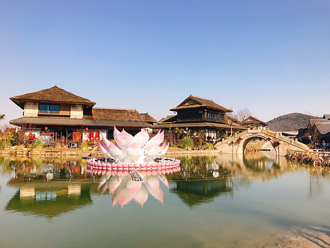

| 无锡拈花湾 |  |
基本信息拈花湾位于江苏省无锡市滨湖区，距离无锡市区约30公里，面积106.67公顷，总建筑面积达到35万平方米。该小镇于2015年11月14日正式对外开放，致力于打造一个结合禅文化与休闲度假的旅游目的地。 文化主题拈花湾的命名源于佛教典故“佛祖拈花，迦叶微笑”，寓意着宁静与智慧。小镇整体以“禅”为主题，强调心态安宁和生活安康，旨在为游客提供一个远离城市喧嚣、感受内心平静的场所。 主要景点拈花湾内有多个吸引人的景点，包括： 半月衔日：一个梦幻般的景观，展现了自然与人文的完美结合。 香月花街：充满花卉和自然气息的步行街道。 拈花塔：象征性的建筑，体现了小镇的文化底蕴。 微笑广场：一个适合休闲和社交的开放空间。 旅游活动游客可以在拈花湾参与各种文化体验活动，如禅修、茶道表演、手工艺体验等，深入了解禅文化。此外，小镇内还提供现代休闲设施，包括精品酒店、特色餐饮和文创商店。 |
|
| 上一篇：灵山大佛 | 返回 |